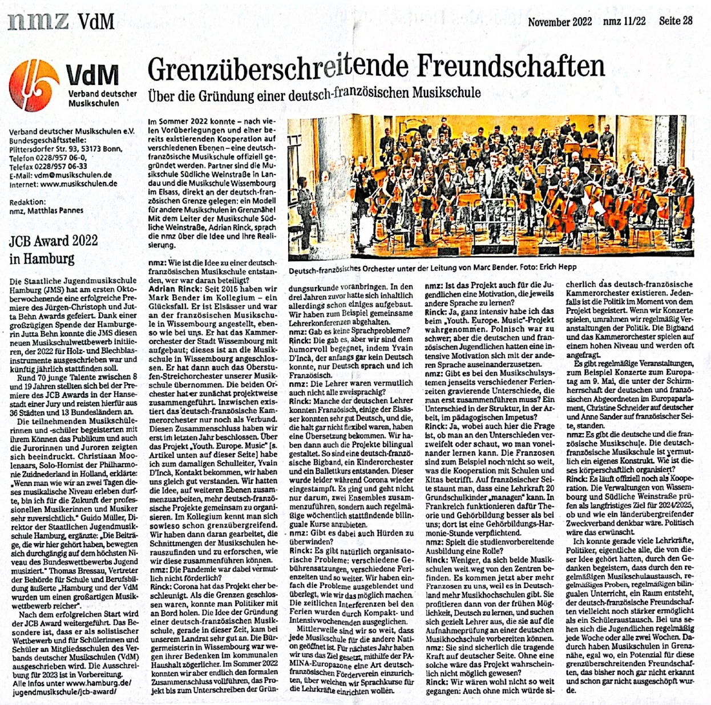
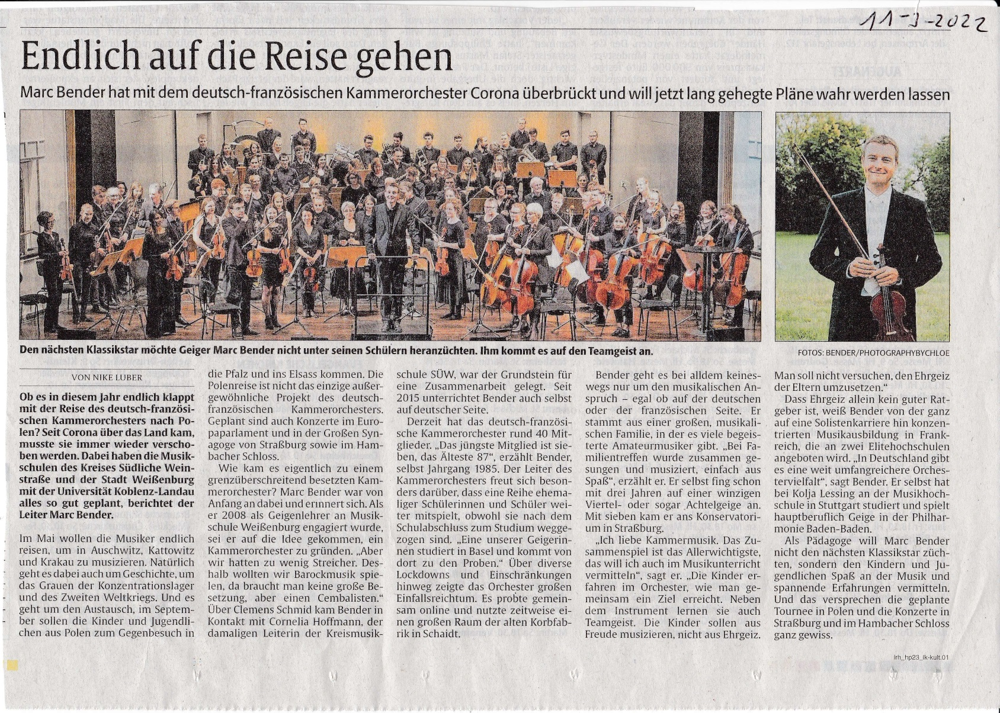
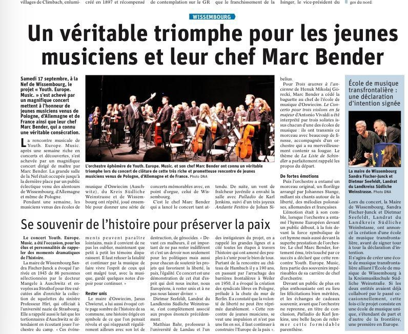
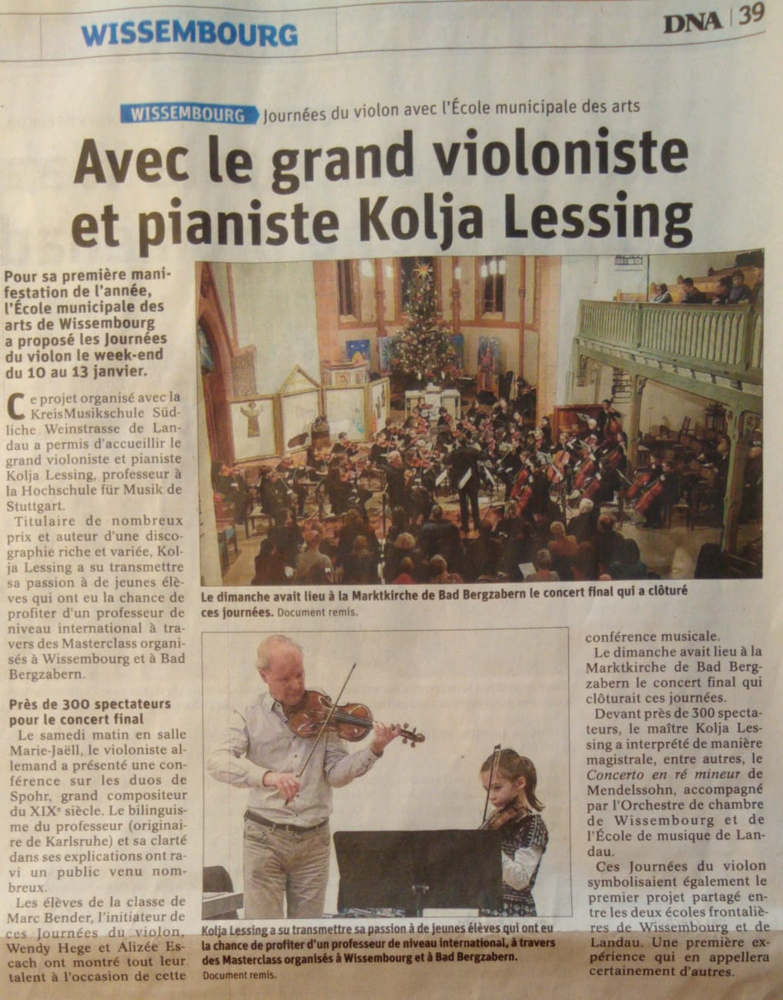

Dernières Nouvelles d'Alsace · 22 mai 2024
Un concert trinational à Wissembourg
L'orchestre réunit musiciens français, allemands et polonais pour un concert placé sous le signe de l'amitié européenne.
Lire l'article (PDF)Espace presse
Articles parus dans la presse régionale française et allemande. Journalistes : les visuels haute définition et le dossier de presse sont disponibles sur simple demande.
Sélection

L'orchestre réunit musiciens français, allemands et polonais pour un concert placé sous le signe de l'amitié européenne.
Lire l'article (PDF)
Portrait du directeur musical de l'orchestre, violoniste à la Philharmonie de Baden-Baden.

Retour sur le concert de rentrée de l'ensemble franco-allemand.

L'orchestre ouvre l'année devant une salle comble.
Contact presse
Photographies libres de droits en haute définition, biographie du chef, historique de l'association et visuels des affiches : contactez-nous et nous vous transmettons l'ensemble sous 48 h.